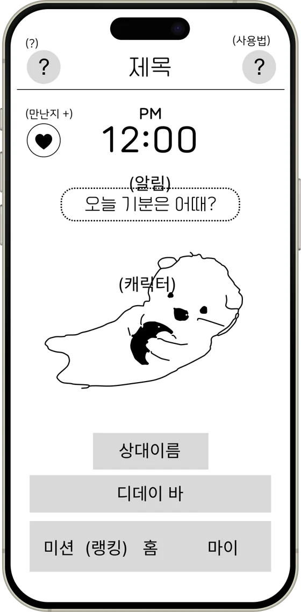
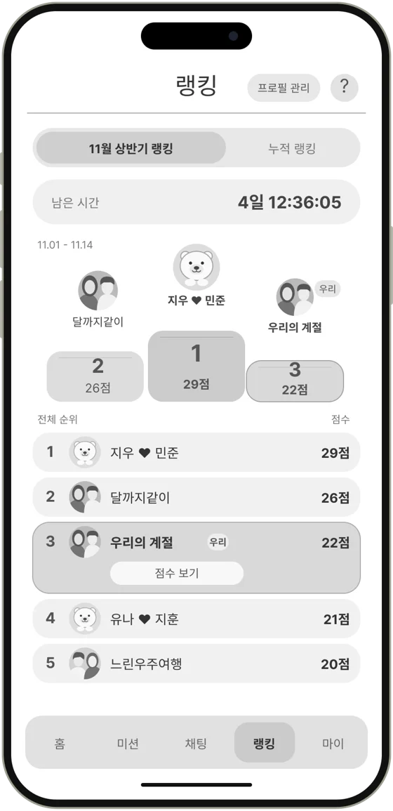

Mobile app · Frontend & UX Lead
Haedal (Otter Half)
A gamified app for long-distance couples. A daily question opens an hour before the couple’s usual call, and each partner’s answer is revealed only after both reply. Shared missions, a turn-based voice walkie-talkie, and a live “mood otter” turn time apart into a shared story.
What I did
- Owned the UX end to end in Figma — onboarding, invite-code pairing, the “two islands” home that shows each partner’s local sky, and the v2 mission roadmap and rankings, iterated from lo-fi wireframes into a 5-tab structure built around the partner’s otter.
- Built the Expo (React Native, TypeScript) app — Apple/Kakao/Google sign-in, session restore, push notifications that deep-link to the day’s question, time-zone detection, and KR/EN i18n.
- Wired v2 features to the backend — missions, rankings, history, rewards, voice clips, and mood connected to Supabase RPCs, Storage, and Realtime Presence.
- Authored ~46% of 489 commits across 180 reviewed PRs with CI (lint, typecheck, unit & 200+ DB test files) and staging-gated deploys via EAS.
- Expo
- React Native
- TypeScript
- Supabase
- Realtime
- Figma
- i18next
- GitHub Actions

